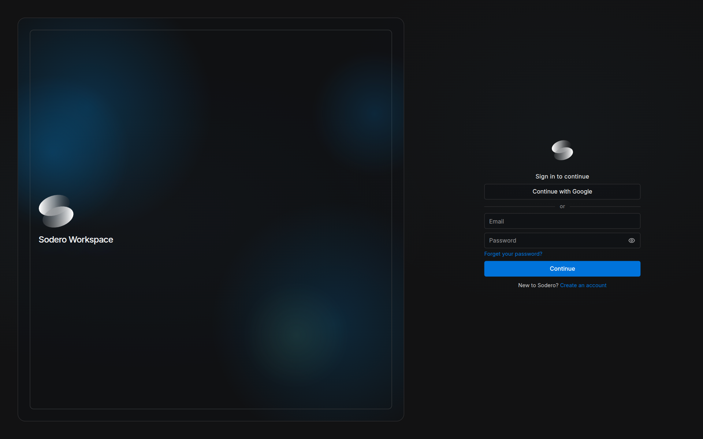
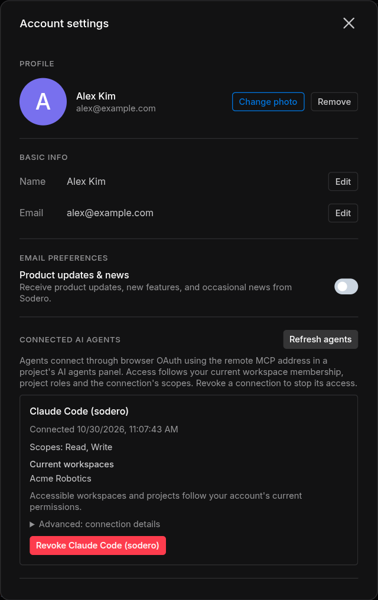
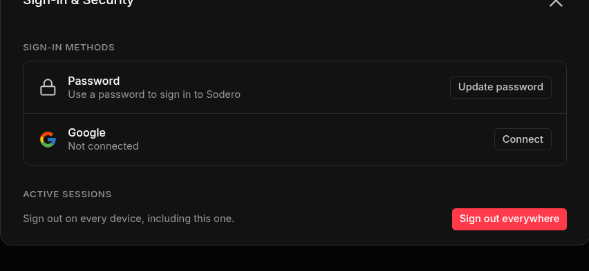

Sign In and Account¶
One Sodero account signs you in to the Sodero Cloud portal at app.sodero.io and to the apps you open from it: Stellar Station, Studio and Theater. This page covers creating the account, signing in, accepting invitations and managing your account.
1. Create an Account¶
- Open app.sodero.io and click Create an account under the sign-in form.
- Enter your Email and a Password of at least 8 characters, and click Create account.
- On Check your email, type the code from Sodero's email and click Verify (Resend code sends a new one). On Email verified, click Continue.
- Answer the five profile questions, one per screen, and click Get started. The first question asks for your name, which the people in your workspaces see.
To use your Google account instead, click Continue with Google and choose the account. A new account then answers the profile questions.
Your first workspace. If you do not belong to a workspace yet, Sodero Cloud creates one for you, named after you, with you as its owner (Workspaces and People).
2. Sign In¶
Open app.sodero.io, enter your Email and Password and click Continue, or click Continue with Google. The portal opens on Projects.


Reset a Forgotten Password¶
- On the sign-in form, click the forgotten-password link under Password.
- Enter your Email and click Send code.
- Enter the Code from the email and a New password of at least 8 characters, and click Reset password. Then sign in with the new password.
First Sign-In to an Account Sodero Set Up for You¶
Sign in with your email address and the temporary password from Sodero's email, if you received one. On Choose a new password, enter a New password (and the Code from the email, if asked) and click Set password.
3. Accept an Invitation¶
People invite you by email. The email has a Review access button that opens the portal with the invitation.
| Invitation to | Email subject | In the portal |
|---|---|---|
| A project | Sodero project access: NAME | Accept invitation (steps below) |
| A Stellar design file | Sodero access: NAME | Accept invitation or Decline, on a page titled Invite received |
| A workspace | Sodero workspace access: NAME | Accepted when you open the link while signed in (Join a Workspace from an Invitation) |
A Stellar design file is a robot or gateway document saved in Stellar Designer (Make Documents in Stellar Designer).
To accept a project invitation:
- In the email, click Review access. Project invite received shows the project, the invited address and who invited you.
- If you are not signed in, click Sign in, or Create an account if you are new. Use the address the invitation was sent to. After you sign in, the invitation page comes back.
- Click Accept invitation. The portal opens a moment later.
The project appears in Projects if you are a member of its workspace; otherwise it is a guest project. A project invitation has no Decline button: if you do not want to join, ignore the email. Project invitations expire after 7 days.
| Message | What to do |
|---|---|
| Wrong account | You are signed in with another address. Click Sign out, then sign in with the invited address. |
| Invite has expired. | Ask for a new invitation. |
| Invite is no longer pending. | The invitation was already accepted, declined or cancelled. |
| Invitation not found. | The link is incomplete, or the invitation no longer exists. Ask for a new one. |
4. Account Settings¶
Click your avatar at the bottom of the left navigation bar and choose Account Settings.


| To change | Do this |
|---|---|
| Your name | Under Basic info, click Edit next to Name, type the name and click Save. |
| Your photo | Under Profile, click Change photo, then Upload photo (PNG, JPEG or WebP) or pick a color. Remove goes back to a plain color. |
| Your email address | Click Edit next to Email, type the new address and click Save. Then type the code sent to the new address in the Code row and click Confirm. Until then, your account keeps the old address. |
| Emails about Sodero | Under Email preferences, turn Product updates & news on or off. |
Your name and photo are shown to the people in your workspaces.
Connected AI agents lists the AI agents connected to your account and lets you revoke them (AI Agents).
To change the theme, click your avatar, choose Theme, pick Midnight (dark, the default) or Twilight (light) and click Apply.
5. Sign-In & Security¶
Click your avatar and choose Sign-in & Security.


| Setting | What it does |
|---|---|
| Password › Update password | Enter your Current password and a New password of at least 8 characters, then click Save. Shown only for accounts that have a password. |
| Google › Connect | Lets you also sign in with Continue with Google |
| Google › Disconnect | Ends sign-in with Google. Works only when your account has another way to sign in. |
| Sign out everywhere | Signs your account out on every device, including this one, without asking first. If you lose a device or think that someone knows your password, use it, then sign in again and update your password. |
To sign out of this browser only, click your avatar, choose Sign out and confirm. This also signs you out of the apps you opened from the portal.
6. Delete Your Account¶
Deleting your account cannot be undone. It also deletes every workspace you own, with all its projects, and every project you created in other people's workspaces, for everyone who works in them.
Deleting your account also removes your profile, your Stellar design files, your memberships, and the Robot Systems and Robot Worlds you created in other people's projects. A workspace you own is deleted with every project in it, including projects that other members created.
Before you delete your account:
- Transfer ownership of every workspace that other people still use.
- Download local copies of the Robot Systems and Robot Worlds that you or others want to keep.
- Deactivate whatever is still active in your workspaces and projects.
Then open Account Settings, click Delete account and confirm with Delete. The portal signs you out. If a message asks you to contact support, part of the deletion did not finish: contact Sodero.
Sign-In Messages¶
| Message | What to do |
|---|---|
| Email or password is incorrect. | Check both. If you forgot the password, reset it. |
| Please confirm your email before signing in. | Enter the code from the verification email. |
| That code is not correct. … or That code has expired. … | Use the code from the most recent email, or ask for a new code. |
| No account uses this email address. | Check the address, or create an account. |
| Reset your password to sign in. | Reset your password, then sign in with the new one. |
| This account needs an administrator to finish its setup. | Contact Sodero. |
| Sign-in didn't finish | Google sign-in was cancelled or refused. Click Back to sign in and try again. |